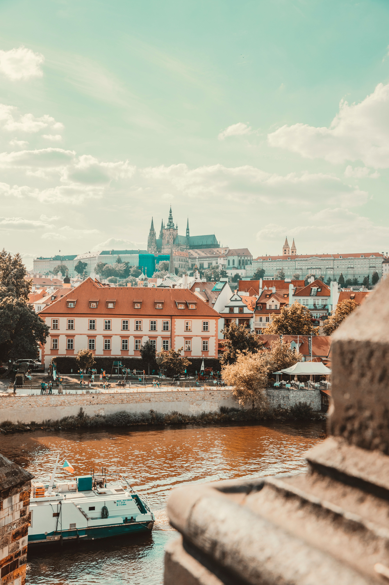

Прага, Чехія

Коротка характеристика
Прага — столиця Чехії, що розташована на річці Влтаві. Її називають «золотою» та «стоверхою» через безліч шпилів і чудово збережений історичний центр.
Чому я обрав це місто
Прага — це місто, де історія відчувається на кожному кроці. Вона компактна, тому майже все можна обійти пішки, а ще тут чудове пиво й затишна атмосфера.
Цікаві факти
- Празький Град вважається одним із найбільших у світі замкових комплексів.
- Будівництво Карлового мосту розпочалося 1357 року за правління Карла IV.
- Астрономічний годинник Орлой на Староміській площі діє з XV століття.
- Історичний центр Праги внесено до Списку всесвітньої спадщини ЮНЕСКО.
Визначні місця
- Празький Град і собор Святого Віта
- Карлів міст
- Староміська площа та Орлой
- Єврейський квартал
- Петршинська оглядова вежа
Моя оцінка
| Критерій | Оцінка |
|---|---|
| Атмосфера | 9 / 10 |
| Архітектура | 10 / 10 |
| Їжа | 9 / 10 |
| Транспорт | 9 / 10 |
| Ціни | 8 / 10 |
| Загальна оцінка | 9,0 / 10 |